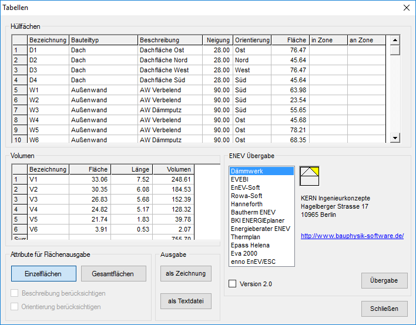
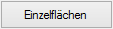
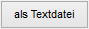

")
Zusammenstellen und Aufbereiten der Hüllflächen-Bauteile und Volumen in Tabellen. Die Tabellen können in die Zeichnung übernommen, als Textdatei exportiert oder an externe ENEV-Programme (*.HLF-Datei) übergeben werden.
Die Hüllflächen-Bauteile und Volumen werden bei der Definition automatisch erfasst und in die Tabelle übernommen.
Optionen im Dialog "Tabellen"
 |
Hüllflächen
In der Zeichnung definierte Hüllflächen. Auflistung entsprechend der unter Attribute für Flächenausgabe (s. unten) gewählten Option (Einzelflächen oder zusammengefasste Gesamtflächen).
Volumen
Diese Tabelle zeigt die einzelnen Volumina.
Attribute für Flächenausgabe

In der Tabelle der Hüllflächen werden alle Flächen angezeigt. Da diese Tabelle an EnEV-Programme übergeben werden kann, müssen Sie dort auch für jede Fläche den Schichtenaufbau mit sämtlichen Parametern angeben.
Wählen Sie die Zusammenfassung der Flächen nach Bauteiltyp, um die Anzahl der Bauteile im EnEV-Programm zu reduzieren. Sie können zwei Attribute kombinieren:
Beschreibung berücksichtigen
Alle Flächen eines Bauteiltyps mit der gleichen Beschreibung werden zusammengefasst.
Orientierung berücksichtigen
Alle Flächen eines Bauteiltyps mit der gleichen Orientierung werden zusammengefasst.
|
Hinweis: |
|
Wenn keine der beiden Möglichkeiten gewählt ist, werden nur die verschiedenen Bauteiltypen aufgelistet. |

Ausgabe
Tabellen in die Zeichnung übernehmen.
Der Hüllflächen-Dialog wird geschlossen, die Tabelle hängt als Rahmen am Cursor und kann per Mausklick platziert werden. [Rechteck verschieben].
|
Tipp: |
|
Die Größe der Tabelle kann durch Dehnen geändert werden. |


Ausgabe der Tabellen als Text mit Trennzeichen (Tabulator) Dateiformat: *.txt. Öffnet die Dateiauswahl (Speichername Textdatei). Der Hüllflächen-Dialog wird geschlossen.
Ausgabe der Tabellen in eine anwendungsspezifische Hüllflächen-Datei (*.HLF-Datei).
Wenn Sie einen Listeneintrag anklicken, wird die Postadresse und die Internetadresse angezeigt.
Ausgabe der Tabellen in eine *.HLF-Datei, die von der markierten Anwendungssoftware gelesen werden kann. Es öffnet sich das Fenster zum Datei speichern. Als Dateiname wird der Name der Zeichnung vorgeschlagen.